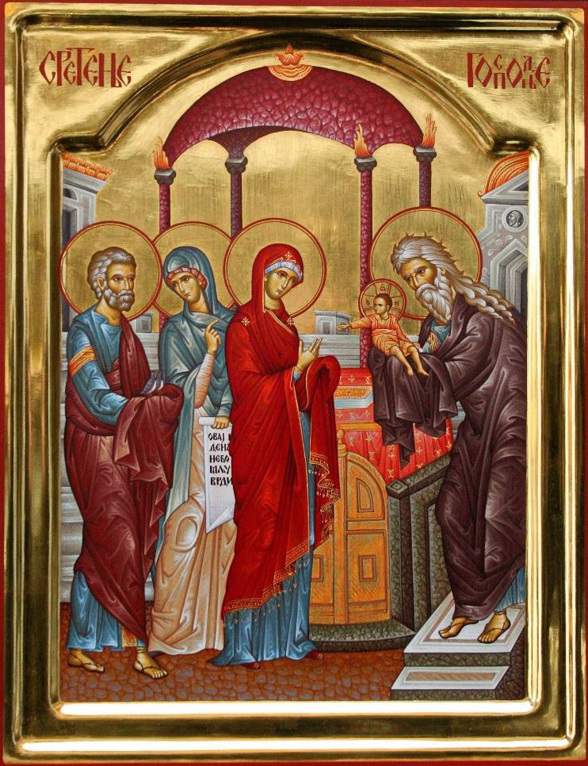
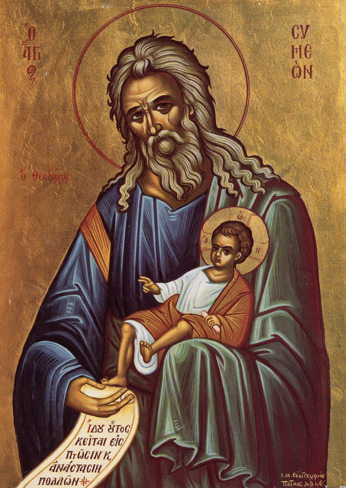

15 02 2014 (1183 дня 7 часов назад)
Сретение Господне

15 февраля по православному календарю - двунадесятый праздник Сретения Господня.
Слово «сретение» значит «встреча». Какое же историческое событие легло в основу праздника? Об этом мы знаем из Евангелия от Луки.
По иудейской традиции Богоматерь и праведный Иосиф в сороковой день рождения Младенца отправились в Иерусалим. Они должны были исполнить предписания закона. Во-первых, после родов женщина не могла появляться в Иерусалимском храме сорок дней. По истечении этого срока мать приносила очистительную жертву: годовалого ягненка и голубку. Если семья была бедной, то вместо ягненка также приносили голубку. Во-вторых, если в семье первенцем был мальчик, родители должны были посвятить его Богу. Этот древний закон иудеи установили в память исхода евреев из Египта – освобождения от четырехвекого рабства. Несмотря на то, что Иисус появился в результате непорочного зачатия, из уважения к закону Дева Мария исполняла очистительный обряд. Семья жила небогато, поэтому в жертву вместо ягненка они принесли голубка.

«Ныне отпускаешь раба Твоего, Владыко…»
Праведный Симеон был одним из семидесяти двух учёных толковников-переводчиков, которым египетский царь Птолемей II (285—247 годы до н.э.) поручил перевести Священное Писание с еврейского на греческий язык (Септуагинта). Когда святой Симеон переводил книгу пророка Исайи и прочитал слова «Се Дева во чреве приимет и родит Сына» (Ис.7:14), он подумал, что это явная описка и вместо «Дева» должно стоять «Жена», и посчитал своим долгом исправить текст. Но ангел Господень остановил руку святого Симеона и уверил его, что он не умрёт, пока не убедится в истинности пророчества Исайи. В день, когда родители Иисуса пришли в Иерусалимский храм, чтобы принести жертву за родившегося первенца мужского пола, как это предписывает иудейский закон (Исх.12:12-15), Симеон по вдохновению явился во храм и там, взяв младенца на руки, произнёс благословения «Ныне отпущаеши раба Твоего, Владыко» (Лк.2:29-32).[3] Симеон скончался сразу после событий Сретения.